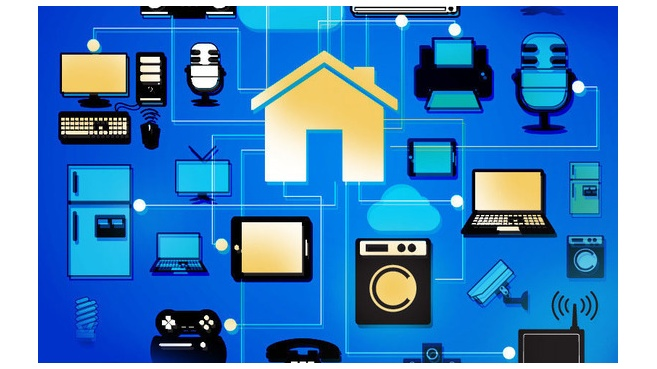
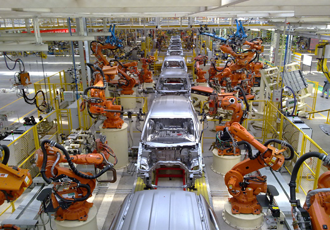

REALIDAD MIXTA
La realidad mixta (RM), también llamada a veces realidad híbrida, es la combinación de realidad virtual y realidad aumentada. Esta combinación permite crear nuevos espacios en los que interactúan tanto objetos y/o personas reales como virtuales.Cada vez se habla más de la aparición de la realidad mixta (MR) como una tecnología que va a llegar y sobrepasar a las actuales realidad virtual (VR) y realidad aumentada (AR). Sin embargo, aunque es un término muy usado en los foros de realidad virtual, todavía se desconoce mucho acerca de esta tecnología y de su potencial.
La realidad virtual implica la creación de una realidad alternativa a la que se accede a través de un dispositivo que aísla al usuario de su entorno físico. Mientras, la realidad aumentada supone la visualización, a través de una pantalla, de objetos u otras capas de información al mundo físico en que vivimos.Y, cómo se ha comentado anteriormente, la realidad mixta va a ser una combinación de ambas que supondrá la fusión del mundo físico con el mundo digital.
En la realidad mixta se trata de llevar el mundo real al mundo virtual. La idea es generar un modelo 3D de la realidad y sobre él superponer información virtual. De esta forma, se podrán combinar ambas realidades para agregar contenido adicional de valor para el usuario de MR. Conseguir esta traslación del mundo real a un modelo 3D virtual es uno de los principales retos de esta tecnología. Uno de los métodos para logra la fusión de ambos mundos y formar un espacio común es la que se utiliza en Project Tango de Google. Este método consiste en el escaneo del espacio en tiempo real para poder conseguir el mix del modelo 3D real con el virtual.
Aunque el paradigma de la realidad mixta sea distinto al de la VR y la AR, las metodologías actuales que se usan para crear experiencias en realidad virtual y aumentada servirán para crear las aplicaciones y experiencias de realidad mixta en el futuro. Simplemente, se tendrá que trabajar con el kit de desarrollo específico de cada uno de los nuevos dispositivos pero usando motores de videojuegos actuales como Unreal Engine o Unity.Un experto actual en modelado y creación de aplicaciones de VR será capaz de dominar el desarrollo de realidad mixta. Por lo tanto, formarte en la creación de experiencias de VR/AR a día de hoy te servirá para poder desarrollar realidad mixta en el futuro.
Sitios relacionados con el tema
Wikipedia
editeca
Xataka
redbull
Videos ralacionados con el tema
Video#1 computerHoy
Video#2 experience Factory
Video#3 Free VR
Video#4 El futuro Es apasionante

INTERNET DE LAS COSAS
El internet de las cosas (en inglés, Internet of Things, abreviado IoT; IdC, por sus siglas en español) es un concepto que se refiere a una interconexión digital de objetos cotidianos con internet. Es, en definitiva, la conexión de internet con más objetos que con personas. También se suele conocer como internet de todas las cosas o internet en las cosas.Una cosa, en la internet de las cosas, puede ser una persona con un implante de monitor de corazón, un animal de granja con un transpondedor de biochip, un automóvil que tiene sensores incorporados para alertar al conductor cuando la presión de los neumáticos es baja, o cualquier otro objeto natural o artificial al que se puede asignar una dirección IP y darle la capacidad de transferir datos a través de una red.
Las computadoras de hoy y, por lo tanto, el internet dependen casi totalmente de los seres humanos para obtener información. Casi todos los aproximadamente 50 petabytes (un petabyte son 1.024 terabytes) de datos disponibles en internet fueron capturados y creados por seres humanos escribiendo, presionando un botón de grabación, tomando una imagen digital o escaneando un código de barras. El problema es que la gente tiene tiempo, atención y precisión limitados, lo que significa que no son muy buenos para capturar datos sobre cosas en el mundo real. Si tuviéramos computadoras que supieran todo lo que hay que saber acerca de las cosas utilizando datos que recopilaron sin ninguna ayuda de nosotros podríamos rastrear y contar todo, y reducir en gran medida los desechos, las pérdidas y el costo. Sabríamos cuándo necesitamos reemplazar, reparar o recordar cosas, y si eran frescas o ya pasadas.
El enorme aumento de IPv6 en el espacio de direcciones es un factor importante en el desarrollo del internet de las cosas. Según Steve Leibson, quien se identifica como "docente ocasional en el Museo de Historia de la Computación", la expansión del espacio de direcciones significa que podríamos "asignar una dirección IPV6 a cada átomo en la superficie de la Tierra, y aún tener suficientes direcciones para hacer otras más de cien Tierras". En otras palabras, los seres humanos fácilmente podrían asignar una dirección IP a cada cosa en el planeta. Se espera que un aumento en el número de nodos inteligentes, así como la cantidad de datos ascendentes generados por los nodos, genere nuevas preocupaciones sobre la privacidad de los datos, la soberanía de los datos y la seguridad.
Las aplicaciones prácticas de la tecnología IoT se pueden encontrar en muchas industrias actualmente, incluyendo la agricultura de precisión, gestión de edificios, salud, energía y transporte. Hay numerosas opciones de conectividad para los ingenieros electrónicos y los desarrolladores de aplicaciones que trabajan en productos y sistemas para internet de las cosas. Aunque el concepto no fue nombrado hasta 1999, la internet de las cosas ha estado en desarrollo durante décadas. El primer aparato de internet, por ejemplo, fue una máquina de Coca Cola en la Universidad Carnegie Melon, a principios de 1980. Los programadores podían conectarse a la máquina a través de internet, verificar el estado de la máquina y determinar si había o no una bebida fría esperándoles, si decidieran hacer el viaje a la máquina.
Sitios relacionados con el tema
Wikipedia
Definicion
fundacionctic
Hipertextual
Videos relacionados con el tema
Video#1 LSChannel
Video#2 InnovaSegura
Video#3 Insite
Video#4 computerHoy

MECATRONICA
Es una disciplina que sirve para diseñar robots y a los productos que involucren a sistema de control para el diseño de productos o procesos inteligentes, lo cual busca crear maquinaria más compleja para facilitar las actividades del ser humano a través de procesos electrónicos en la industria mecánica, principalmente. Esta disciplina une la ingeniería mecánica, ingeniería electrónica, ingeniería de control e ingeniería informática. Debido a que combina varias ingenierías en una sola, su punto fuerte es la versatilidad.
Con base en lo anterior, se puede hacer referencia a la definición propuesta por J. A. Rietdijk: "mecatrónica es la combinación sinérgica de la ingeniería mecánica de precisión, de la electrónica, del control automático y de los sistemas para el diseño de productos y procesos", la cual busca crear maquinaria más compleja para facilitar las actividades del ser humano a través de procesos electrónicos en la industria mecánica principalmente. Existen, claro está, otras versiones de esta definición, pero ésta claramente enfatiza que la mecatrónica está dirigida a las aplicaciones y al diseño.
La mecatrónica nace para suplir tres urgentes necesidades latentes; la primera, encaminada a automatizar la maquinaría y así lograr procesos productivos ágiles y confiables; la segunda crear productos inteligentes, que respondan a las necesidades del mundo moderno; y la tercera, por cierto muy importante, armonizar entre los componentes mecánicos y electrónicos de las máquinas, ya que en muchas ocasiones, era casi imposible lograr que tanto mecánica como electrónica manejaran los mismos términos y procesos para hacer o reparar equipos.
Un ingeniero en mecatrónica es un profesional con amplio conocimiento teórico, práctico y multidisciplinario capaz de integrar y desarrollar sistemas automatizados y/o autónomos que involucren tecnologías de varios campos de la ingeniería. Este especialista entiende sobre el funcionamiento de los componentes mecánicos, eléctricos, electrónicos y computacionales de los procesos industriales, y tiene como referencia el desarrollo sostenible.
Sitios relacionados con el tema
Wikipedia
ITBA
INTEC
sites
Videos relacionados con el tema
Video#1 Masterhacks
Video#2 Estudiante ingeniero
Video#3 El-quinto-Talento
Video#4 Schneider Electric
3D PRINTING
La impresión 3D es un grupo de tecnologías de fabricación por adición donde un objeto tridimensional es creado mediante la superposición de capas sucesivas de material. Las impresoras 3D son por lo general más rápidas, más baratas y más fáciles de usar que otras tecnologías de fabricación por adición, aunque como cualquier proceso industrial, estarán sometidas a un compromiso entre su precio de adquisición y la tolerancia en las medidas de los objetos producidos.
Las impresoras 3D ofrecen a los desarrolladores del producto la capacidad para imprimir partes y montajes hechos de diferentes materiales con diferentes propiedades físicas y mecánicas, a menudo con un simple proceso de ensamble. Las tecnologías avanzadas de impresión 3D pueden incluso ofrecer modelos que pueden servir como prototipos de producto. Desde 2003 ha habido un gran crecimiento en la venta de impresoras 3D. De manera inversa, el coste de las mismas se ha reducido.3 Esta tecnología también encuentra uso en campos tales como joyería, calzado, diseño industrial, arquitectura, ingeniería y construcción, automoción y sector aeroespacial, industrias médicas, educación, sistemas de información geográfica, ingeniería civil y muchos otros.
Un gran número de tecnologías en competencia están disponibles para la impresión 3D;9 sus principales diferencias se encuentran en la forma en la que las diferentes capas son usadas para crear piezas. Algunos métodos usan fundido o ablandando el material para producir las capas, por ejemplo sinterizado de láser selectivo (SLS) y modelado por deposición fundida (FDM), mientras que otros depositan materiales líquidos que son solidificados con diferentes tecnologías. En el caso de manufactura de objetos laminados, se cortan capas delgadas para ser moldeadas y unidas juntas.
Las impresoras 3D no pueden utilizar cualquier material, hay una gran variedad para su impresión, como: transparentes, de colores, opacos, flexibles, rígidos, de alta temperatura y resistencia. Este tipo de materiales satisfacen necesidades de manera visual y táctil, además, son muy resistentes y con la fuerza necesaria que los prototipos requieren. El diseño de nuestro producto nos dará paso a escoger el material que debemos utilizar, la impresora y el proceso por el cual se imprimirá. Dentro de los materiales que más se usan están los que simulan plásticos de ingeniería, llamados filamentos, como PLA y ABS. El filamento PLA es un ácido poliláctico, biodegradable, derivado del maíz. Tiene múltiples colores incluyendo su color natural, dentro de ellos existen colores translucidos y limitados. El ABS es barato y con buena terminación, el material adecuado para prototipado, que requieren una alta resistencia al impacto y golpes demasiado fuertes, este filamento también incluye una amplia variedad de colores.
Sitios relacionado con el tema
wikipedia
tugurium
silicon.es
all3dp
Videos relacionados con el tema
Video#1 Vegati
Video#2 Rincon util
Video#3 explainigcomputer
Video#4 compumundo
TECNOLOGIA 5G
5G son las siglas utilizadas para referirse a la quinta generación de tecnologías de telefonía móvil. Es la sucesora de la tecnología 4G. Actualmente se encuentra sin estandarizar y las empresas de telecomunicación están desarrollando sus prototipos. Está previsto que su uso común sea en 2020.
Como todas las tecnologías de red inalámbrica que son “de última generación”, con 5G tu teléfono tendrá una conexión más rápida: será unas 10 veces más veloz que 4G, según anticipan los expertos de la industria. Eso es suficiente para transmitir un video de "8K" o descargar una película 3D en 30 segundos. (En 4G, eso tomaría seis minutos). La capacidad adicional hará que el servicio sea más confiable, permitiendo que más dispositivos se conecten a la red simultáneamente.
Pero 5G va mucho más allá de los teléfonos inteligentes. Sensores, termostatos, coches, robots y otras nuevas tecnologías se conectarán a 5G algún día. Y las redes actuales de 4G no cuentan con el ancho de banda suficiente para la gran cantidad de datos que todos esos dispositivos transmitirán. Las redes 5G también reducirán prácticamente a cero el tiempo de retraso entre los dispositivos y los servidores con los que se comunican. En el caso de los automóviles que se conducen solos, eso significa una comunicación sin interrupciones entre el coche, otros vehículos, centros de datos y sensores externos.
Para lograr todo eso, la tecnología 5G necesitará viajar en ondas de radio de muy alta frecuencia. Las frecuencias más elevadas tienen velocidades más rápidas y más ancho de banda. Pero, no pueden viajar a través de paredes, ventanas o tejados, y se vuelven considerablemente más débiles en distancias largas. Esto implica que las compañías inalámbricas necesitarán instalar miles –o quizás millones– de torres en miniatura para celular encima de cada poste de luz, al costado de los edificios, dentro de cada hogar y potencialmente en cada habitación.
Sitios relacionados con el tema
cnnespanol
wikipedia
Gemalto
muyinteresante
Videos ralacionado con el tema
Video#1 Mundo-desconocido
Video#2 Maestro-de-la-computacion
Video#3 computerHoy
Video#4 Spacetar-Galatica
RESUMEN
Después de haber estudiado estos temas veo que la tecnología está teniendo mejoras en su evolución con el fin de hacer que todo funcione en base a ella y así tener mayor control de todo, el nuevo estándar de HTML es HTML5. Aunque algunas funcionalidades no están operativas para todos los navegadores (sobre todo para nuestro querido IE) es un punto y aparte en el diseño web. HTML5 ha dado un paso para integrar la web en HTML. Una de las características más importantes es Canvas, ya que se integra en HTML5 si necesidad de tener que añadir otras aplicaciones como Flash. En cuanto a CSS3 No todos los navegadores soportan el mismo nivel de CSS3 y no todos los módulos de especificación están aún siquiera implementados. También es importante que quede claro, que Javascript no es del todo un lenguaje de programación, sino más bien un lenguaje de script (rutinas o guiones). Por lo tanto, es más parecido a los macros de los procesadores de hojas d Las Progressive Web Apps son experiencias que combinan lo mejor de la Web y lo mejor de las apps.e cálculo o texto. Sería imposible ejecutar un programa completo con Javascript. Aquí vemos también como la inteligencia artificial lleva a cabo acciones que maximicen sus posibilidades de éxito en algún objetivo o tarea. Por otro lado tenemos lo que son las criptomonedas, un medio digital de intercambio que utiliza criptografía fuerte para asegurar las transacciones financieras, controlar la creación de unidades adicionales y verificar la transferencia de activos. Al leer todos estos temas damos certeza de que la tecnología ha tenido mejores avances en los últimos años para el mejoramiento y beneficios del usuario.
15-EIST-1-026
Alonzo Brand Aquino
Seminario De Tegnologia Aplicada